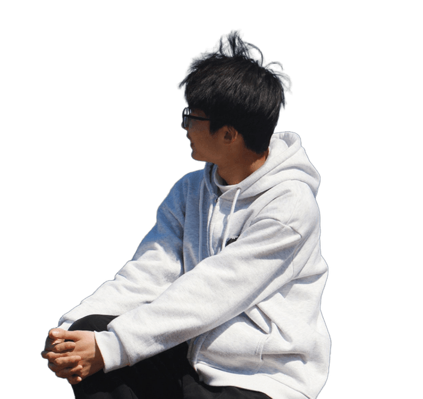
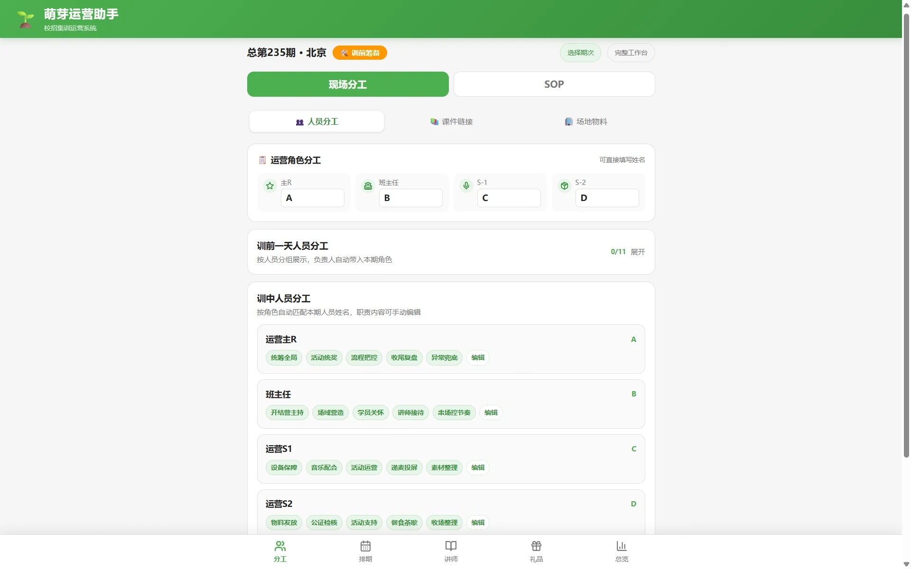
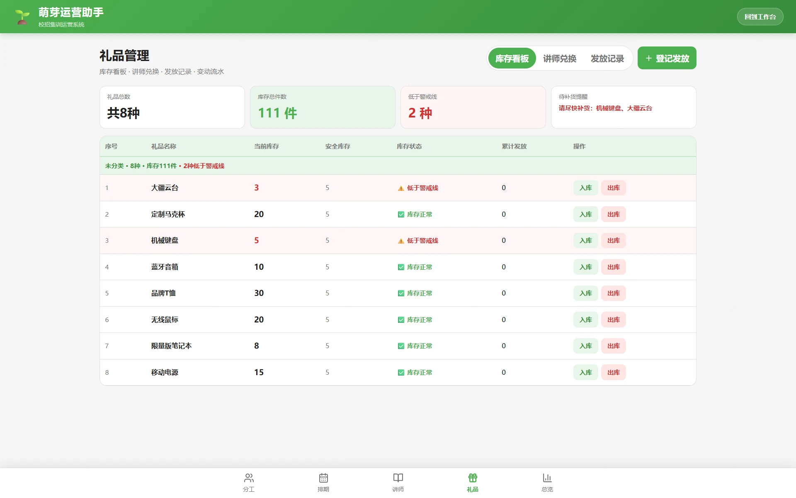
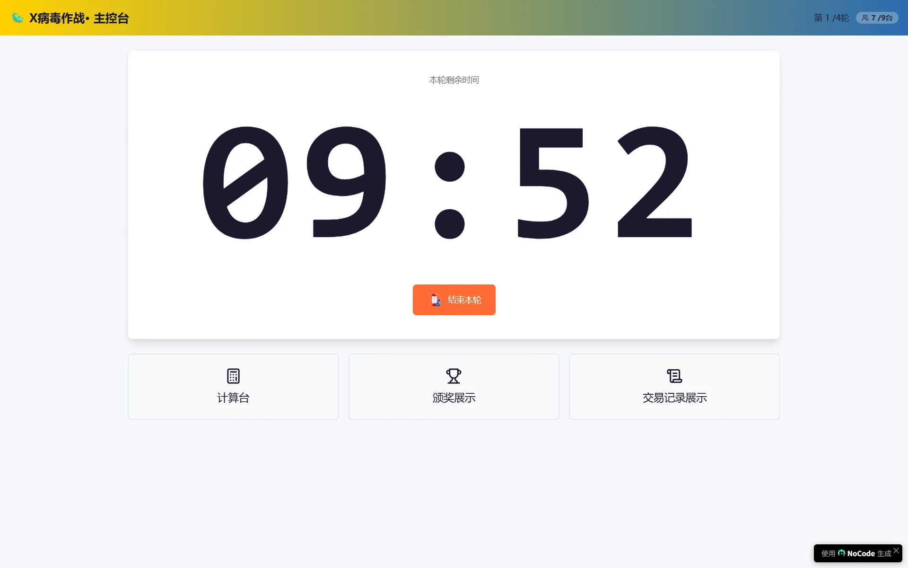
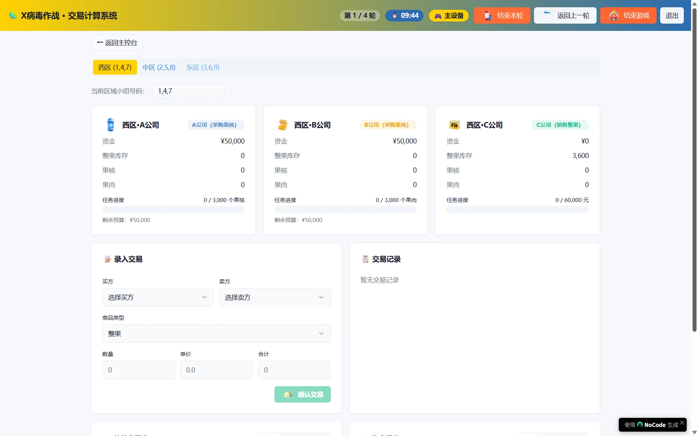
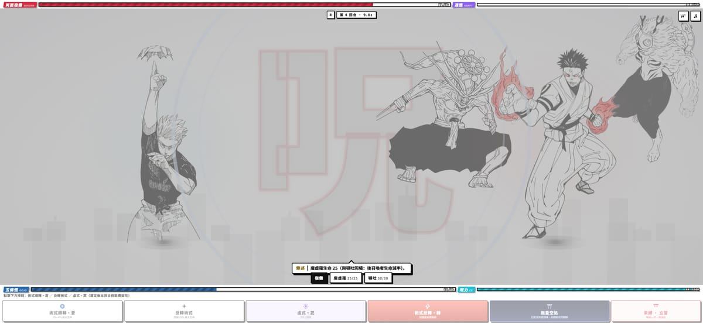
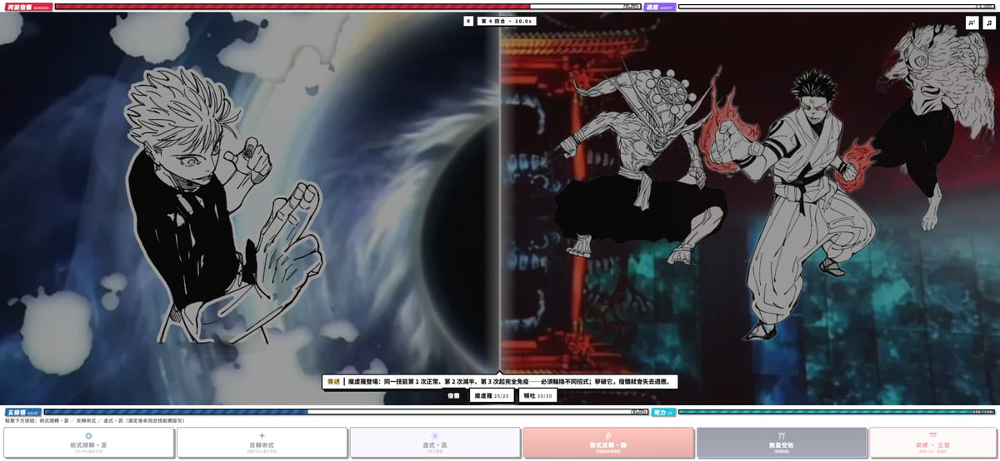

吉林大学工商管理 2027 届，专业排名 前 30%。 在美团做 AI 学习产品运营：用提示词工程 + RAG 搭 AI 学习助手，咨询单量环比 +367%； 在安永参与消博会品牌传播，项目曝光近 47 万；自营短视频与二手电商 3 年，播放 25 万+。 产品、内容、活动、数据全链路跑过——凡经我手，皆成作品。

正式登场 2027 届 · 求职进行中 点击换一张 ↺探险地图 · 四坊一径
探险手记 · 开篇 —— 你坠入一片雾薄荷色的巨构遗迹。此地是一位建造者的工棚，四座工坊敞着门，东西都留着没锁。慢慢看。
底数一览
来路 · 四段实习
美团 · 学习发展-在线学习 ｜ 产品运营实习生（AI 智能学习）
- 策略验证：在美团行家 AI 学习产品内测社群中以内容供给带动互动，验证「内容驱动活跃」策略假设。
- 专题与节点运营：覆盖内测、社群、专题节点 3 条运营线，联动产品、研发落地关键节点。
- 需求与 PRD：参与 Skill 功能设计，基于用户反馈做需求分析，输出 PRD 跟进上线，形成「需求—方案—上线」闭环。
- 内容沉淀：承担 AI 辅助内容沉淀与公共能力开发 2 项工作。
美团 · 培训运营 ｜ 新员工培养（萌芽校招生成长计划）
- 场次统筹：4 人现场团队中担任场次主负责人：3 城并行、每期 80–100 人；训前统筹分工物料与讲师节奏，训中推进流程与出勤核验，训后输出观察与改进点。
- 数据复盘：每日发布课后问卷收集讲师评分与课程评价，定位痛点「理论讲授脱离工作场景」，发现满意度「首日偏高、次日最低、末日回升」规律并写入改进项。
- 沙盘计算系统（0→1）：针对纸质合同易乱、评奖依赖人工核算的痛点，自发立项用 AI Coding 搭建线上系统，覆盖交易登记、自动计算、成绩统奖 3 大功能。
- 运营助手：与 mentor 对齐优先级后完成 4 个模块：SOP 自动生成个人待办、讲师排期看板、礼品库存与积分兑换看板、话术模板库。
安永华明会计师事务所 · 市场部 ｜ 品牌传播、媒体运营实习生
- 内容运营：参与官方公众号推文制作与排版，累计 40+ 篇，最高单篇阅读 1.1 万。
- 数据与竞品分析：基于阅读量、互动率完成 2 份公众号数据分析与 1 份竞品分析。
中国人寿 ｜ 销售实习生（电话外呼，沟通客户保障需求）
课外之功 · 另起一行
吉林大学商学与管理学院学生会 · 新媒体部长
带领 10 人媒体团队，负责学院 15+ 场大型活动的摄影、新闻发布与公众号、视频平台宣传，统筹策划与审核；累计发布新闻稿 20+ 篇、推文 10+ 篇。
个人短视频账号 · 内容创作者
独立完成选题策划、剪辑与发布全流程，累计播放 25 万+，持续训练网感与内容判断力。
个人闲鱼账号 · 独立运营
持续运营 3 年+，以二手手办模型为主，独立完成选品收购、定价发布、买家沟通与发货，形成「收购—转售—再采购」循环，累计交易额 5 万+。
个人作品集网站 · 独立搭建
2026.09 独立搭建并部署上线，展示沙盘系统、运营助手等实战案例——也就是你正在看的这个网站。
斩获与器物
工具落地
痛点是最好的立项书。在美团萌芽校招生成长计划里，我把 SOP 繁杂、纸质合同易乱、评奖靠人工核算这些麻烦——一个个变成了线上系统与看板；轮到我自己学东西，做的则是一个会批改、会答疑的 AI 学习助手。
萌芽运营助手
与 mentor 对齐优先级后，我独立完成运营助手的 4 个模块，把散落各处的经验沉淀成可复用的系统能力。
SOP 自动生成个人待办
把冗长 SOP 拆解为按人自动生成的待办清单，负责人打开即知此刻该做什么，降低交接成本。
讲师排期看板
讲师、课程、城市、场次一屏总览，排期冲突与空档一眼可见，训前沟通成本大幅下降。
礼品库存与积分兑换看板
积分兑礼环节的库存与兑换记录线上化，告别人工记账，账实相符可追溯。
话术模板库
按排期自动代入讲师信息生成通知话术，模板统一、信息准确，新人也能立刻上手。


沙盘计算系统（0→1）
针对沙盘游戏中的交易与评奖痛点，我用 AI Coding 从 0 到 1 搭出线上系统：试运行保留纸质兜底，逐场迭代补全情景与计算逻辑，最终支持大屏投屏——成绩统奖从「人工核算半小时」变成「一键出结果」。
纸质兜底 → 逐场迭代
试运行阶段保留纸质流程兜底，每场结束后补全情景设置与计算逻辑，稳扎稳打扩大系统覆盖面。
与 4 类角色打通
对接讲师、场地、酒店、供应商，建立统一信息通路同步排期与物料节点，人员变动时及时调整分工与话术，保证 3 城节奏一致。


美团行家 · Skill 功能
在美团行家 AI 学习产品中参与 Skill 功能设计：从用户反馈中做需求分析，输出 PRD 并跟进上线，形成完整的产品闭环。
探险地图 · 四坊一径
探险手记 · 卷一 · 造物 —— 推开造物坊的门，铁砧还留着余温。这几件东西都是从 SOP 的褶皱里长出来的：萌芽运营助手、沙盘计算系统，还有一个会批改、会答疑的 AI 学习助手——一个人、一台电脑、几行 AI 代码，敲出来的东西真能上手用。按需取用。
内容运营
从安永的 40+ 篇推文到个人账号 25 万+ 播放，再到 10 人新媒体团队——选题、剪辑、排版、发布，我跑过内容生产的每一个环节。
品牌传播 · 媒体运营
40+ 篇推文制作与排版 最高单篇 1.1 万阅读
推文制作与排版
参与官方公众号推文的内容制作与视觉排版，累计 40+ 篇，覆盖品牌传播与活动宣传场景。
2 份数据分析 + 1 份竞品分析
基于阅读量、互动率完成公众号数据分析，并输出竞品分析报告，用数据反哺内容策略。
安永诣雅元核引擎™ 消博会重磅发布，央视同步全球首发
红筹上市疑无路，税筹破局又一村——赴港上市红筹架构拆除过程中的核心税务思考
新增值税申报表：核心变化和政策信号全解读
中国居民个人对外投资活动的监管逻辑重构——国务院对外投资新规、CRS 信息交换与国内税务合规的交叉观察
个人短视频账号 25 万+ 播放
独立完成选题策划、剪辑与发布全流程，在实战中持续训练网感、节奏感与内容判断力——自己做账号，才更懂用户为什么停留。
学生会新媒体部长 10 人团队
2024.03–2026.09，带领 10 人媒体团队负责学院 15+ 场大型活动的摄影、新闻发布与公众号、视频平台宣传，统筹策划与审核。
个人闲鱼账号 · 独立运营 3 年+ · 5 万+ 交易额
内测社群 · 内容驱动活跃
在美团行家 AI 学习产品内测社群中，以内容供给带动互动，验证「内容驱动活跃」策略假设；同时承接产品执行专题与关键节点运营，联动产品、研发落地。
内测线
核心用户反馈收集与需求挖掘，为 Skill 功能设计提供输入。
社群线
内容供给带动互动，提升社群活跃与留存。
专题节点线
承接产品执行专题与关键节点运营，联动研发落地。
探险地图 · 四坊一径
探险手记 · 卷二 · 传声 —— 传声坊的墙上钉满稿纸。四十余篇推文、二十五万次播放、十个人的新媒体小队：选题、剪辑、排版、发布，声音从这里递出去，再带着回声回来。听一听。
数据分析
商科出身，习惯用数据说话：尖烽时刻里主导财务建模、夺下全国二等奖，实习中用问卷与阅读数据定位真问题。
全国商业模拟大赛
核心课程（经济统计学、市场营销、微观经济学、宏观经济学）为底子，数学竞赛省级三等奖加持，把课堂知识直接用于真实商战推演。
用问卷定位满意度规律
从讲师评分到改进项
每日发布课后问卷收集讲师评分与课程评价，归类开放意见定位痛点「理论讲授脱离工作场景、学员偏好互动形式」；同时发现满意度「首日偏高、次日最低、末日回升」的规律，写入复盘改进项。
713 篇推文里的传播规律
四大公众号全量对比：用数据定位「高产出、效率不足」
对安永 vs 普华永道 / 德勤 / 毕马威的公众号做内容全量盘点——发文数、总阅读、平均阅读、头条均阅、爆款数（>8000）、高/低阅读分布与系列矩阵，再对竞品内容线逐条归因，输出可落地的优化策略。
普华永道 · 少而精
周均仅 7.5 篇（四大最少），单篇均阅 2,545（四大最高）；税务内容占比 33.6%，极度克制的专业人设——量减半，效率翻倍。
德勤 · 网感先锋
AI 内容占比 15.9%、活动邀请 16.6%（均四大最高），标题有网感（「让 AI 真正提效，先要敢'改自己'」），把品牌嵌入达沃斯 / 冬奥等顶级场景。
毕马威 · 政策机器
政策洞察占比 21.1%、IPO 内容 15.0% 均为四大最高；「银行业展望」等系列饱满，爆款数 81 篇——报告产能即声量。
策略 · 瘦身提纯
压缩通知型内容（单场活动回顾、常规党建改海报）；邀请函均阅 2,393、多城活动均阅 3,163 = 整体均阅的 2.2 倍，集中火力打高价值场景。
策略 · 爆款密码
税务 / 上市 / 政策解读是四家共同的爆款赛道，发布普遍在 19:00 前；标题改「专业术语 + 痛点场景」的强价值承诺型写法。
策略 · 分层归因
竞品内容线按「情感连接 / 身份平衡 / 专业背书」三层归因定位；用 HBR「SPREAD」六维框架（社交有用 · 引发思考 · 情感驱动等）校验爆款潜力。
落地沉淀：结论与「数据追踪新增字段」（发布精确时间 / 内容形态）等建议均写入报告交付；分析框架同样适用于个人作品集的内容运营——先看数据，再定打法。
分析工具箱
探险地图 · 四坊一径
探险手记 · 卷三 · 读数 —— 读数坊的桌上摊着七百一十三篇推文。红笔圈出的几个数字：阅读、互动、爆款率。数据不吵，它只是把话说得比人清楚。看数字开口。
领域展开人外魔境 · 新宿决战
五条悟对宿傩。苍与赫的连携、虚式「茈」的蓄力、领域对拼的判定、接力上场时换谁—— 全部塞进一个 47MB 的单文件 HTML，打开浏览器就能打。这是东坡和足下从零搓出来的同人网页游戏， 也是「AI Coding 到底能不能做出真东西」的一次硬碰硬。
进入游戏这一页不在导航里——能翻到这儿，说明你把地图上的每个红叉都点过了。


为什么把它藏起来
因为它跟求职没直接关系——它只是一个人把喜欢的东西认真做完的样子。 但如果要从中挑出点方法论：需求拆解、手感调参、演出节奏、单文件性能取舍， 和做一个产品没什么两样。差别只在于，这次的血条是我自己画的。